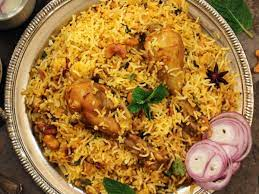

Biriyani

Chicken Biriyani is one of the most popular rice dishes in Indian cusine
Traditional biriyani is made by layering marinated chicken below a layer of boiled rice. You'll learn how to make the most perfect biriyani! Along with
your biriyani, it is best served with raita.
Ingredients
Marinade for Chicken Biriyani
- 1/2 kg chicken
- 3 tablespoons plain yogurt
- 1 1/4 tablespoons ginger garlic paste
- 1/2 to 1 tablespoon garam masala
- 1/2 teaspoon salt
- 1/2 to 1 teaspoon red chili powder
- 1/4 teaspoon ground turmeric
- 1 tablespoon lemon juice (opitonal)
Whole spices
- 1 bay leaf
- 4 green cardamoms
- 6 cloves
- 1 inch cinnamon
- 1 star anise
- 3/4 teaspoon shahi jeera
- 1 strand mace
Other Ingredients for Chicken Biriyani
- 2 cups basmati rice
- 2 tablespoon ghee or oil
- 1 large onion
- 1/4 to 1/2 cup mint leaves
- 1 green chili
- 1/4 cup plain yogurt
- 1/4 to 1/2 teaspoon red chili powder
- 1 teaspoon garam masala
- 3 cups water
- 3/4 teaspoon salt
- 2 tablespoon fried onions
- 1 pinch saffron (soaked in 2 tbsp hot milk)
Steps
Preperation
- To a bowl, add yogurt, gigner garlic paste, 1/2 tsp salt, garam masala, turmeric, lemon huice & red chili powder
- Mix up well and taste the marinade. Add more salt and spice if needed
- Mae slits on the chicken pieces. Add it to the marinade & mix well. Cover and set aside for 1 hour to overnight
- Rinse basmati rice three times and soak for 30 mins. Drain to colander after 30 mins
How to Make Chicken Biriyani
- Heat ghee or oil in a pot or pressure cooker
- Add whole spices - bay leaf, cardamoms, cloves, cinnamon, star anise, shahi jeera & mace.
- When the spices begin to sizzle, add onions & fry them evenly stirring often until uniformly light brown and not burnt
- Add chicken & saute until pale for 5 mins on medium heat
- Cover & cook on a low flame until the chicken is tender. Saute to evaporate any excess moisture in the pot
- Taste test and add more salt if needed. Add about 1/4 teaspoon salt. Add 1/4 cup yogurt, 2 tablespoons chopped mint leaves, 1 slit green chili,
1/2 to 1 teaspoon red chili powder & 1 teaspoon garam masala.
Layering
- Mix everything well and layer chicken evenly at the bottom.
- Spread drained rice in a layer over the chicken
- To a seperate bowl, pour 3 cups water. If cooking in a pot use 3 1/2 cups water
- Add 1/2 to 3/4 tsp salt and mix. Taste the water. It must be slightly salty
- Pour 2 cups of this water across the sides of the cooker or pot. Gently pour the rest on top of the rice.
- Level the rice if needed. Sprinkle 2 tablespoons mint leaves. Optionally, add 2 tablespoons fried onions & saffron soaked milk
- Pot Method - If cooking in a pot, cover and cook on a low flame until the chicken biriyani is done to your liking. If the rice
is still undercooked or hard, pour 1/4 to 1/2 cup boiling water and cook further. When done, it has to be fully gooked, yet remain grainy
- Cooker Method - Set the flame to medium high. Cover & place the whistle. Cook for 1 whistle. Move the cooker away from the burner
to stop cooking further
- Wait until the pressure settles. Mix the chicken biriyani with a fork
- Serve from the top to the bottom layer. Each serving gets biriyani rice from the top layer and chicken from the bottom layer
- Enjoy chicken biriyani with raita